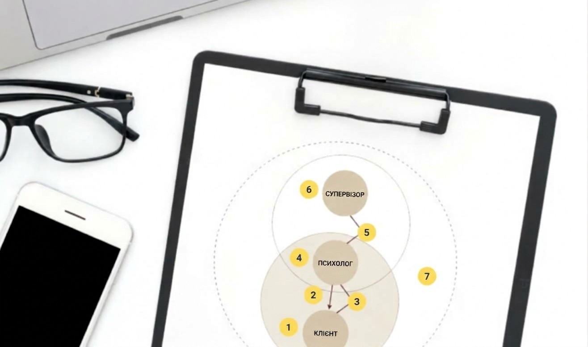

Навіщо психологу супервізія: як Семифокусна модель Хокінса забезпечує якість допомоги в умовах війни
Робота практикуючого психолога в Україні сьогодні — це щоденний виклик, який вимагає не лише високої кваліфікації, а й колосальної емоційної витривалості. Працюючи з наслідками воєнної травми, гострою тривогою, невизначеною втратою та кризами у взаєминах, фахівець постійно перебуває в спільному з клієнтом фокусному полі викликів сьогодення. За таких умов супервізія перестає бути просто вимогою етичного кодексу чи формальною процедурою — вона стає головним інструментом професійної стійкості, безпеки та доказової якості терапії.

Чому супервізія критично важлива саме зараз?
Під час війни межа між досвідом клієнта та особистим життям психолога часто стає дуже проникною. Психолог переживає ті ж самі тривоги, відключення світла, обстріли чи втрати, що й люди, які приходять до нього на сесію. Це створює високий ризик вторинної травматизації, професійного вигорання та виникнення «сліпих плям» у практиці.
Супервізія дає фахівцю три фундаментальні опори:
Безпека та якість для клієнта: гарантія того, що стратегія допомоги є об’єктивною, доказовою та вільною від неусвідомлених проєкцій чи викривлень психолога.
Професійний розвиток фахівця: можливість поглибити клінічне мислення, систематизувати знання та відточити інтервенції під наставництвом фахівця, що пройшов спеціалізоване навчання на супервізійному рівні.
Емоційна підтримка та збереження ресурсу: регулярне розвантаження та профілактика емоційного виснаження, що дозволяє залишатися у професії тривалий час.
Семифокусна модель супервізії
Для того щоб супервізійний процес був максимально структурованим, методологічно обґрунтованим і орієнтованим на вимірюваний клінічний результат, у сучасній доказовій психотерапевтичній практиці активно застосовують Семифокусну модель супервізії, розроблену Пітером Хокінсом та Робіном Шохетом. Цей підхід спирається на системно-рефлексивну парадигму та інтегрує елементи психодинамічної терапії, когнітивно-поведінкового аналізу й феноменології. Модель забезпечує багатовимірний аналіз консультативного процесу, дозволяючи супервізору та супервізанту послідовно й цілісно поглянути на складний клінічний кейс через сім різних «оптичних лінз», що охоплюють як безпосередню симптоматику клієнта, так і приховані інтерперсональні динаміки.
Застосування цієї методичної рамки дозволяє вийти за межі спрощеного розгляду скарг клієнта чи виключно формального оцінювання дій психолога. Спрямовуючи фокус уваги на складний перетин терапевтичних та супервізійних стосунків — зокрема на аналіз переносу, контртрансферних реакцій фахівця та явищ паралельного процесу — модель допомагає оперативно виявляти когнітивні й емоційні «сліпі плями».
Тож, про сім різних «оптичних лінз».
1. Фокус на клієнтові
Аналізується безпосередньо історія клієнта, його симптоматика, внутрішні ресурси, реакції на стрес та поточний стан.
У чому користь: допомагає точно зрозуміти внутрішній світ клієнта та сформувати адекватну клінічну концептуалізацію.
2. Фокус на інтервенціях психолога
Досліджуються конкретні методи, техніки та стратегії, які застосовує психолог (наприклад, інструменти КПТ, Уніфікованого протоколу чи заземлення).
У чому користь: дозволяє оцінити доцільність та ефективність обраних технік, відкоригувати план роботи та підібрати найбільш результативний інструментарій.
3. Фокус на терапевтичних стосунках
Вивчається динаміка альянсу між психологом і клієнтом: рівень довіри, межі, явища переносу та контртрансферу.
У чому користь: допомагає вчасно помітити, де стосунки «застрягли», та відновити безпечний емоційний контакт.
4. Фокус на самому фахівцеві (супервізантові)
Досліджується внутрішній стан психолога під час роботи з кейсом: його емоційні відгуки, тілесні реакції, сумніви чи тривоги.
У чому користь: захищає фахівця від емоційного вигорання, допомагає усвідомити власні тригери та відновити внутрішню опору.
5. Фокус на супервізорських стосунках (паралельний процес)
Аналізується те, що відбувається безпосередньо в контакті між супервізором і психологом під час обговорення кейсу.
У чому користь: часто динаміка стосунків з клієнтом неусвідомлено відтворюється на супервізії. Помітивши цей «паралельний процес», можна знайти ключ до розв'язання складного моменту в терапії.
6. Фокус на самому супервізорові
Супервізор аналізує власні відгуки, інтуїтивні здогадки та контртрансферні відчуття під час слухання історії.
У чому користь: додає ще один рівень експертної аналітики, допомагаючи підсвітити приховані нюанси терапевтичної ситуації.
7. Фокус на ширшому контексті
Оцінюється вплив соціокультурного середовища, умов війни, організаційного контексту, етичних норм та соціальних чинників.
У чому користь: надзвичайно актуальний фокус для України, адже він враховує вплив травми війни, загрози безпеці та виклики сьогодення як на клієнта, так і на фахівця.
Що отримують учасники процесу в результаті?
Для психолога
Регулярна участь у супервізійному процесі забезпечує психологу якісний стрибок у професійному розвитку, перетворюючи невизначеність і клінічні сумніви на глибоке, структуроване розуміння кожного кейсу. Завдяки чітким алгоритмам аналізу фахівець вибудовує прозору та результатоорієнтовану стратегію терапії, що дозволяє відстежувати й вимірювати реальний прогрес клієнта на кожному етапі роботи.
Окрім методичного зростання, супервізія створює міцний фундаментальний захист для психологічного благополуччя самого фахівця. Відчуття колегіальної підтримки та професійного плеча ефективно долає ізоляцію, яка часто супроводжує приватну практику, і слугує надійною профілактикою емоційного вигорання та вторинної травматизації під час роботи зі складними запитами.
Для клієнта
Завдяки супервізії клієнт отримує суттєве підвищення якості та ефективності психотерапевтичної допомоги, адже над його запитом фактично працює синергія знань, досвіду та клінічної мудрості двох фахівців — психолога та супервізора. Це дозволяє оперативніше виявляти «сліпі плями», підбирати найбільш точні доказові інтервенції та адаптувати стратегію роботи під індивідуальні потреби людини.
Окрім цього, супервізований процес гарантує клієнтові максимальний рівень етичної та емоційної безпеки. Людина здобуває впевненість у тому, що терапія проходить у прозорому, екологічному руслі, не затягується штучно та орієнтується на конкретні, вимірювані результати задля її реального відновлення та ментального благополуччя.
Особливість Семифокусної моделі
Тобто, головна особливість і справжня «родзинка» Семифокусної моделі Пітера Хокінса та Робіна Шохета полягає в її об'ємній панорамній оптиці, яка виходить далеко за межі звичайного аналізу скарг клієнта чи дій психолога. Модель розглядає супервізію як цілісну, живу систему, де одночасно досліджуються сім різних вимірів: від емоційного стану клієнта та обраних КПТ-технік до прихованих контртрансферних реакцій психолога. Унікальним ядром підходу є вміння виявляти «паралельні процеси» — феномен, коли складна, неусвідомлена динаміка стосунків між клієнтом і психологом віддзеркалюється в контакті між психологом і супервізором, відкриваючи найкоротший шлях до розгадки «застряглих» кейсів.
Іншою винятковою цінністю моделі є її контекстуальна гнучкість та етична об'ємність (сьомий фокус), що робить її незамінною в сучасних українських реаліях. Вона дозволяє системно враховувати вплив зовнішнього середовища — воєнного стану, тривалого стресу, факторів безпеки та соціальних викликів — на психологічний стан обох учасників терапевтичного альянсу. Завдяки такому поєднанню глибинної рефлексії та широкого контексту, модель Хокінса перетворює супервізію з суворого контролю на високотехнологічне, результатоорієнтоване партнерство, яке зберігає професійну автономію фахівця та забезпечує максимальну безпеку для клієнта.
Супервізія як складова відповідальної практики
Таким чином, супервізія за Семифокусною моделлю Пітера Хокінса та Робіна Шохета є системним і методологічно завершеним інструментом, який перетворює обговорення клінічних кейсів на високотехнологічний процес забезпечення якості психотерапевтичної допомоги. Це дає змогу фахівцю вийти за межі спрощеного бачення проблеми та формувати глибинну, доказову концептуалізацію кожного випадку.
Практична потреба у постійному використанні цієї моделі в щоденній роботі психолога обумовлена високими вимогами сьогодення, зокрема викликами воєнного часу та роботою з психотравмою. Враховуючи сьомий фокус моделі — соціокультурний та екологічний контекст — супервізія дає змогу системно інтегрувати зовнішні кризи у стратегію терапії. Впровадження цієї системи у практику є необхідною умовою для підтримки високої результативності інтервенцій, дотримання суворих етичних стандартів та швидкої адаптації протоколів допомоги під реальні потреби клієнта.
У підсумку, Семифокусна модель Хокінса виступає незамінним фундаментом для довгострокової професійної стійкості самого фахівця. Вона слугує надійним заслоном від вторинної травматизації та емоційного вигорання, забезпечуючи психологу необхідне колегіальне плече та орієнтири для зростання. Систематичне застосування моделі утверджує супервізію як обов'язкову складову відповідальної клінічної практики, де професійне вдосконалення психолога безпосередньо транслюється у безпеку, екологічність та вимірюваний результат для клієнта.
Article
Why psychologists need supervision: how Hawkins' Seven-Eyed Model ensures quality of care during wartime
Working as a practising psychologist in Ukraine today is a daily challenge that demands not only advanced qualifications but also tremendous emotional endurance. When addressing the consequences of war trauma, acute anxiety, ambiguous loss and relationship crises, practitioners continually share the same field of present-day challenges as their clients. Under these conditions, supervision ceases to be merely a requirement of an ethical code or a formal procedure. It becomes the principal tool for professional resilience, safety and evidence-based quality of therapy.
Why is supervision critically important right now?
During war, the boundary between a client's experience and a psychologist's personal life often becomes highly permeable. Psychologists experience the same anxieties, power cuts, shelling and losses as the people who come to their sessions. This creates a high risk of secondary traumatisation, professional burnout and the emergence of blind spots in practice.
Supervision gives practitioners three fundamental sources of support:
Safety and quality for the client: an assurance that the approach to care is objective, evidence-based and free from the psychologist's unconscious projections or distortions.
The practitioner's professional development: an opportunity to deepen clinical thinking, organise knowledge and refine interventions under the guidance of a professional who has completed specialist training in supervision.
Emotional support and the preservation of resources: regular opportunities to decompress and prevent emotional exhaustion, making a sustained career in the profession possible.
The Seven-Eyed Model of supervision
To make supervision as structured, methodologically grounded and focused on measurable clinical outcomes as possible, contemporary evidence-based psychotherapeutic practice actively uses the Seven-Eyed Model of supervision, developed by Peter Hawkins and Robin Shohet. This approach draws on a systemic and reflective paradigm and integrates elements of psychodynamic therapy, cognitive behavioural analysis and phenomenology. The model provides a multidimensional analysis of the counselling process, allowing the supervisor and supervisee to examine a complex clinical case systematically and holistically through seven different lenses, encompassing both the client's presenting symptoms and hidden interpersonal dynamics.
Applying this methodological framework makes it possible to move beyond a simplified review of a client's complaints or a purely formal evaluation of the psychologist's actions. By directing attention to the complex intersection of therapeutic and supervisory relationships, including transference, the practitioner's countertransference reactions and parallel process, the model helps identify cognitive and emotional blind spots promptly.
Let us look at these seven different lenses.
1. Focus on the client
The client's history, symptoms, internal resources, responses to stress and current state are examined directly.
The benefit: this helps develop an accurate understanding of the client's inner world and an appropriate clinical formulation.
2. Focus on the psychologist's interventions
The specific methods, techniques and strategies used by the psychologist are explored, such as CBT tools, the Unified Protocol or grounding.
The benefit: this allows the appropriateness and effectiveness of the chosen techniques to be assessed, the treatment plan to be adjusted and the most effective tools to be selected.
3. Focus on the therapeutic relationship
The dynamics of the alliance between psychologist and client are explored: the level of trust, boundaries, transference and countertransference.
The benefit: this helps identify where the relationship has become stuck and restore safe emotional contact.
4. Focus on the practitioner (the supervisee)
The psychologist's internal state while working with the case is explored, including emotional responses, bodily reactions, doubts and anxieties.
The benefit: this protects practitioners from emotional burnout, helps them recognise their own triggers and restores their inner sense of support.
5. Focus on the supervisory relationship (parallel process)
What happens directly in the interaction between the supervisor and psychologist during the case discussion is examined.
The benefit: the dynamics of the relationship with the client are often unconsciously reproduced in supervision. Recognising this parallel process can provide the key to resolving a difficult moment in therapy.
6. Focus on the supervisor
The supervisor examines their own responses, intuitive impressions and countertransference experiences while listening to the account.
The benefit: this adds another level of expert analysis, helping to illuminate hidden nuances of the therapeutic situation.
7. Focus on the wider context
The influence of the sociocultural environment, wartime conditions, organisational context, ethical standards and social factors is assessed.
The benefit: this focus is particularly relevant to Ukraine because it considers the impact of war trauma, threats to safety and current challenges on both the client and the practitioner.
What do participants gain from the process?
For the psychologist
Regular participation in supervision gives psychologists a substantial boost in professional development, transforming uncertainty and clinical doubts into a deep, structured understanding of each case. Clear methods of analysis help practitioners build a transparent, outcome-focused therapeutic strategy that allows the client's actual progress to be tracked and measured at every stage of the work.
Beyond methodological development, supervision creates a strong foundation for protecting the practitioner's own psychological wellbeing. Collegial support and professional companionship effectively counter the isolation that often accompanies private practice and provide reliable prevention of emotional burnout and secondary traumatisation when working with complex concerns.
For the client
Through supervision, clients receive a substantial improvement in the quality and effectiveness of psychotherapeutic care, as their concerns benefit from the combined knowledge, experience and clinical wisdom of two professionals: the psychologist and the supervisor. This makes it possible to identify blind spots more promptly, select the most precise evidence-based interventions and adapt the approach to the individual's needs.
In addition, a supervised process guarantees the client the highest level of ethical and emotional safety. Clients gain confidence that therapy is transparent and respectful, is not artificially prolonged and focuses on specific, measurable outcomes in support of their genuine recovery and mental wellbeing.
What makes the Seven-Eyed Model distinctive?
The principal strength and distinctive feature of Peter Hawkins and Robin Shohet's Seven-Eyed Model is its broad, panoramic perspective, which extends far beyond a conventional analysis of the client's complaints or the psychologist's actions. The model views supervision as a holistic, living system in which seven different dimensions are explored simultaneously, from the client's emotional state and the chosen CBT techniques to the psychologist's hidden countertransference reactions. At the heart of the approach is the ability to identify parallel processes: a phenomenon in which complex, unconscious dynamics between client and psychologist are mirrored in the relationship between psychologist and supervisor, opening the shortest path to understanding cases that have become stuck.
Another exceptional strength of the model is its contextual flexibility and ethical breadth, represented by the seventh focus, which makes it indispensable in present-day Ukraine. It allows the influence of the external environment, including martial law, prolonged stress, safety factors and social challenges, to be considered systematically in relation to the psychological state of both participants in the therapeutic alliance. By combining deep reflection with a broad contextual perspective, Hawkins' model transforms supervision from strict oversight into a sophisticated, outcome-focused partnership that preserves the practitioner's professional autonomy and ensures maximum safety for the client.
Supervision as part of responsible practice
Supervision based on Peter Hawkins and Robin Shohet's Seven-Eyed Model is therefore a systematic and methodologically complete tool that transforms clinical case discussions into a sophisticated process for ensuring the quality of psychotherapeutic care. It enables practitioners to move beyond a simplified view of a problem and develop a deep, evidence-based formulation of each case.
The practical need to use this model consistently in psychologists' everyday work is driven by the demanding realities of the present, particularly wartime challenges and work with psychological trauma. By taking account of the model's seventh focus, the sociocultural and environmental context, supervision enables external crises to be systematically integrated into the therapeutic strategy. Incorporating this framework into practice is a necessary condition for maintaining highly effective interventions, observing rigorous ethical standards and rapidly adapting care protocols to clients' actual needs.
Ultimately, Hawkins' Seven-Eyed Model provides an indispensable foundation for practitioners' long-term professional resilience. It serves as a reliable safeguard against secondary traumatisation and emotional burnout, offering psychologists the collegial support and direction they need to grow. Consistent use of the model establishes supervision as an essential part of responsible clinical practice, in which psychologists' professional development translates directly into safety, respectful care and measurable outcomes for the client.